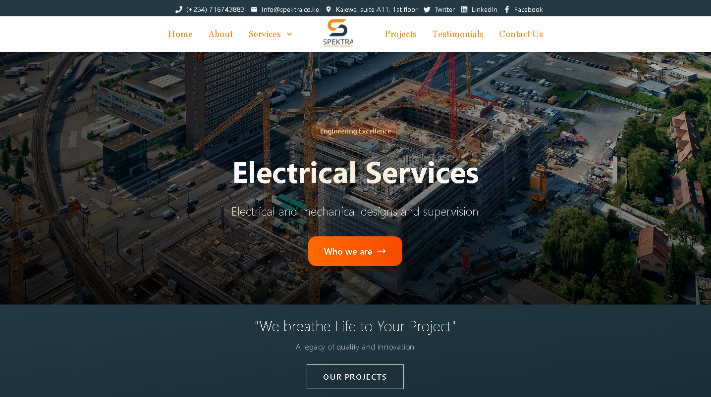
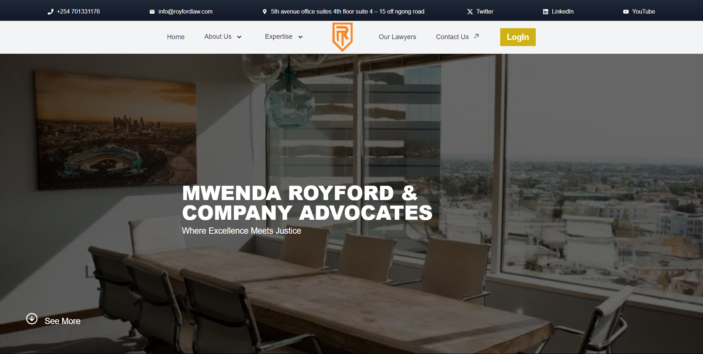
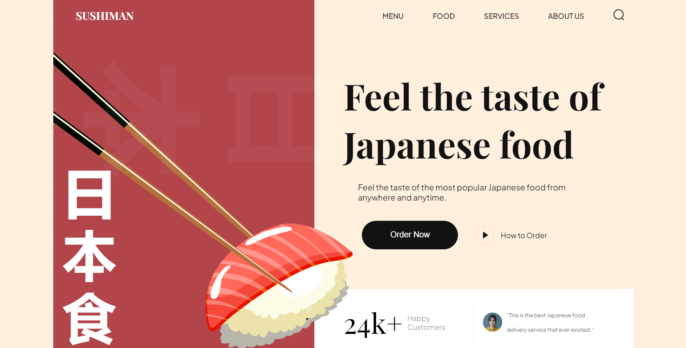
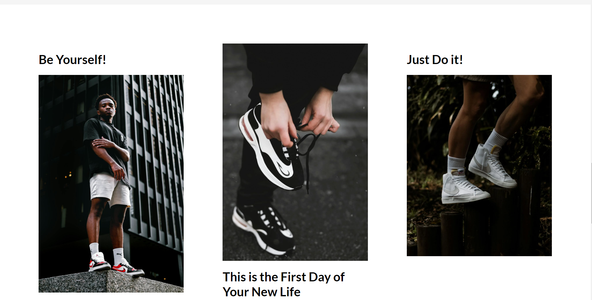
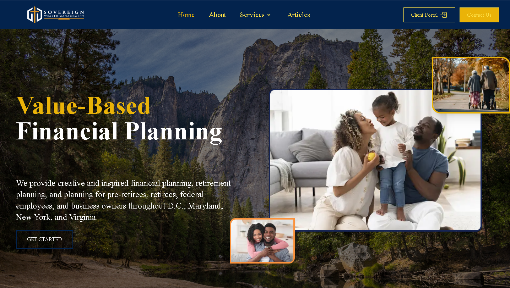
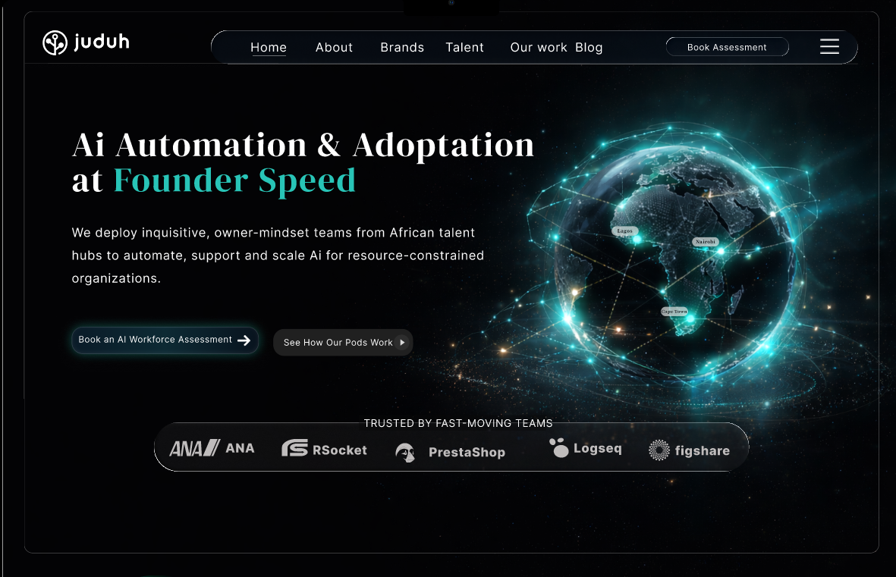
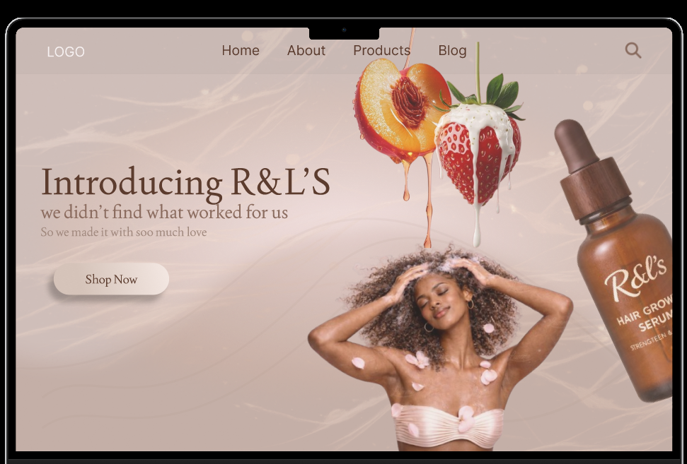
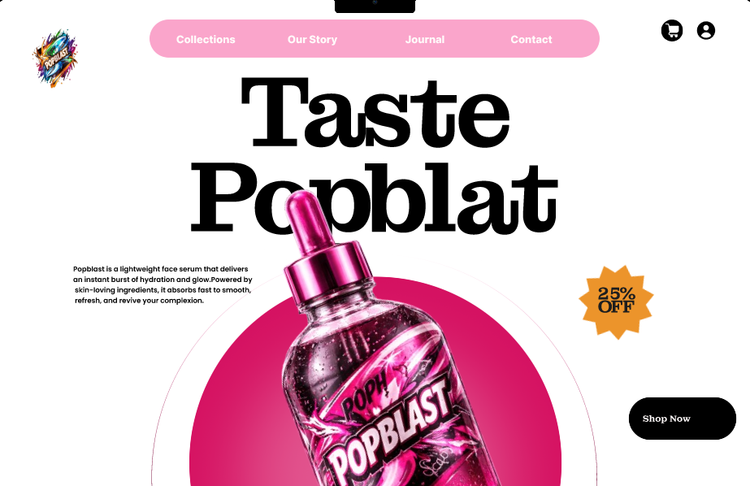
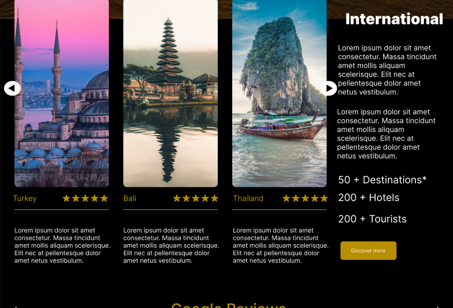

Experience
Frontend development and UI/UX design
3+ years building interfaces, improving user journeys, and sharpening product presentation.
Frontend developer / UI/UX designer / Nairobi, Kenya
I blend interface craftsmanship, product thinking, and engineering discipline to turn ideas into launch-ready web experiences with a strong visual point of view.
About
I enjoy taking a product from rough idea to a polished interface that feels intentional at every layer, from visual rhythm and microcopy to frontend implementation and usability.
Frontend Developer and UI/UX Designer with 3+ years of experience building polished, high-performance web applications that clients cannot ignore. Proficient in React.js, Next.js, TypeScript, and Figma - with a rare ability to bridge design and engineering in a single role.
Delivered 15+ production projects across legal, financial, and service industries, consistently improving performance metrics by up to 40%. Known for perfectionism, fast learning, and an instinct for turning complex problems into clean, intuitive user experiences. Thrives under pressure and brings creative energy to every project until it is exactly right.
Experience
3+ years building interfaces, improving user journeys, and sharpening product presentation.
Strengths
I pair debugging discipline with design sensitivity so the end result works and feels right.
Working style
I care about maintainability, accessibility, hierarchy, and the kind of detail users notice even when they cannot name it.
Expertise
I work best where product polish and technical execution meet: turning direction into a coherent system that is usable, scalable, and visually strong.
Backend Skills
I am building backend competency to complement my frontend work — writing reliable server logic, connecting data, and deploying services end to end.
Frontend Projects
These projects highlight responsive implementation, layout discipline, and the ability to turn concepts into interfaces that feel finished.

Frontend build
A modern credentials experience designed around clarity, trust, and a guided user journey for managing digital records.

Client-style website
A professional, content-led legal website built to feel credible, structured, and accessible across screen sizes.

Interactive storefront
A vibrant commerce-style interface focused on playful presentation, browsing flow, and energetic visual rhythm.

Landing page build
A product-led retail landing page with strong visual hierarchy, focused storytelling, and smooth presentation details.

Business website
A polished corporate web presence built with smooth animations, responsive layout, and a professional identity for a wealth management firm.
Figma Designs
This showcase is intentionally styled differently from the code work to highlight interface design, prototyping, and visual system thinking.

Company landing page
A company landing page designed to introduce Juduh with a clear brand presence, confident visual identity, and a compelling first impression.
View in Figma
Hair brand website
A brand website for R&L's, a hair brand launching new products — designed to showcase their range with a warm, expressive visual identity.
View in Figma
Serum brand website
A brand website for Taste Popblat, a serum brand — built around product trust, clean hierarchy, and a distinctive visual identity.
View in Figma
Travel website
A simple travel website designed for people who want to explore destinations — clean layouts, inviting visuals, and a straightforward browsing experience.
View in FigmaContact
If you need a frontend developer with design instinct, or a designer who can think through implementation, I would love to hear about the project.